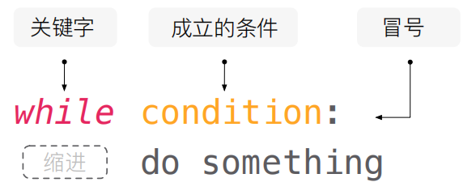
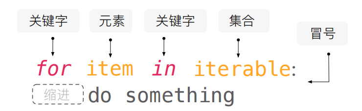

if 条件:
#条件为True时执行的代码块
else:
#条件为False时执行的代码块20 Python条件语句
条件语句
在本节课程中，我们将学习条件语句的基本结构、逻辑判断以及如何构建复杂的条件表达式。同时，我们还会练习编写带有条件判断的程序，让你能够根据条件执行不同的代码块。
- 条件语句的基本结构 条件语句允许我们根据不同的条件来执行不同的代码块。在Python中，条件语句使用if和else关键字构建。基本结构如下：
- 逻辑判断 条件语句的逻辑判断基于比较运算符，用于比较两个值的相等性、大小关系等。常见的比较运算符包括：
- 相等性判断：==（等于）、!=（不等于）
- 大小关系判断：>（大于）、<（小于）、>=（大于等于）、<=（小于等于）
举例：
balance = 1000
if balance == 0:
print("账户余额为零")
else:
print("账户余额不为零")账户余额不为零- 复杂的条件表达式 我们可以使用比较运算符和逻辑运算符构建复杂的条件表达式，以实现更灵活的条件判断。常见的逻辑运算符包括：
- and（与）：当所有条件都为True时，结果为True
- or（或）：当至少一个条件为True时，结果为True
- not（非）：取反操作，将True变为False，False变为True
举例：
income = 50000
if income >= 50000 and income <= 100000:
print("年收入在50,000到100,000之间")年收入在50,000到100,000之间编写带有多个条件判断的程序 我们经常需要根据不同的条件执行不同的代码块。
elif 是 Python 中的一个关键字，它是 if 语句的一部分，用于在多个条件语句中选择一个执行。elif 是 else if 的缩写，可以在 if 语句的末尾添加一个或多个 elif 语句，用于测试多个条件，如果前面的条件不成立，则测试下一个条件，直到找到一个成立的条件为止。
elif 语句的语法如下：
if 条件1:
# 如果条件1成立，则执行这里的代码
elif 条件2:
# 如果条件1不成立，但条件2成立，则执行这里的代码
elif 条件3:
# 如果条件1和条件2都不成立，但条件3成立，则执行这里的代码
else:
# 如果前面的所有条件都不成立，则执行这里的代码让我们通过举例来理解它的用法：
net_income = 5000
if net_income > 0 and net_income <= 10000:
print("盈利一般")
elif net_income > 10000 and net_income <= 50000:
print("盈利良好")
elif net_income > 50000:
print("盈利优秀")
else:
print("亏损")盈利一般revenue = float(input("请输入公司的营业收入："))
if revenue > 1000000:
tax = revenue * 0.3
print("应缴纳的所得税为：", tax)
else:
tax = revenue * 0.2
print("应缴纳的所得税为：", tax)
应缴纳的所得税为： 100000.0循环语句
- 基本结构 循环语句允许我们重复执行一段代码。Python中有两种常见的循环结构：while循环和for循环。
Python 的 for 循环和 while 循环，它们的相同点在于都能循环做一件重复的事情，不同点在于 for 循环会在可迭代的序列被穷尽的时候停止，while则是在条件不成立的时候停止。
因此 把 for 循环所做的事情概括成一句话就是: 于…其中的每一个元素，做…事情；
把while 的作用概括成一句话就是: 只要…条件成立，就一直做…。
- while循环的基本结构如下：
while 条件:
# 循环体代码块
这里看一个简单的例子：
while 1 < 3:
print('1 is smaller than 3')这里提醒一下，要及时按下停止运行代码。 因为在 while 后面的表达式是永远成立的，所以 print 会一直进行下去直至你的cpu 过热。这种条件永远为 True 的循环，我们称之为死循环 (Infnite Loop) 。
但如果 while 循环不能像 for 循环那样，在集合被穷尽之后停下来，我们又怎么样才能控制 while 循环呢? 其中一种方式就是: 在循环过程中制造某种可以使循环停下来的条件，例如:
count = 0
while True:
print('Repeat this line !')
count = count + 1
if count == 5:
breakRepeat this line !
Repeat this line !
Repeat this line !
Repeat this line !
Repeat this line !在上面这段代码中，有两个重要的地方，首先是我们给一个叫 count 的变量赋值为 0，其目的是计数。我们希望在循环次数为 5 的时候停下来。接下来的是 break同样作为关键词写在 if 下面的作用就是告诉程序在上面条件成立的时候停下来，仅此而已。这样就可以避免了死循环。
for循环的基本结构如下：
for 变量 in 可迭代对象:
# 循环体代码块
for 是关键词，而后面紧接着的是一个可以容纳“每一个元素”的变量名称，至于变量起什么名字自己定，但切记不要和关键词重名。
在关键词 in 后面所对应的一定是具有“可迭代的”(iterable) 或者说是像列表那样的集合形态的对象，即可以连续地提供其中的每一个元素的对象。
for num in range(1,11):
print(str(num) + ' + 1 =',num + 1)1 + 1 = 2
2 + 1 = 3
3 + 1 = 4
4 + 1 = 5
5 + 1 = 6
6 + 1 = 7
7 + 1 = 8
8 + 1 = 9
9 + 1 = 10
10 + 1 = 11以上是一个简单的例子，内置函数range的意思是依次。我们只需要在 range 函数后面的括号中填上数字，就可以得到一个具有连续1到10的整数序列，利用for循环让他们相加。
- 控制条件和执行过程 循环的执行依赖于控制条件。在每次循环迭代开始时，会检查控制条件的值。如果条件为True，则执行循环体代码块；否则，跳出循环。
举例：
- 使用while循环输出1到5的金融数据：
price = 100.0
while price <= 500.0:
print("股票价格:", price)
price += 100.0股票价格: 100.0
股票价格: 200.0
股票价格: 300.0
股票价格: 400.0
股票价格: 500.0使用for循环遍历股票交易日的收盘价：
prices = [105.0, 102.5, 99.2, 101.8, 104.6]
for price in prices:
print("收盘价:", price)- break和continue语句 前面提到，我们可以使用break语句提前终止循环的执行，跳出循环体。而continue语句则用于跳过当前迭代，继续执行下一次循环。
举例：
- 使用break语句在满足条件时终止循环：
price = 100.0
while True:
print("股票价格:", price)
price += 100.0
if price > 500.0:
break股票价格: 100.0
股票价格: 200.0
股票价格: 300.0
股票价格: 400.0
股票价格: 500.0使用continue语句跳过某些迭代：
prices = [105.0, 102.5, 99.2, 101.8, 104.6]
for price in prices:
if price < 100.0:
continue
print("收盘价:", price)收盘价: 105.0
收盘价: 102.5
收盘价: 101.8
收盘价: 104.6编写具有条件判断和循环结构的程序
在本节课程中，我们将进一步学习如何编写具有条件判断和循环结构的程序，并解决一些简单的问题。
- 判断奇数和偶数 编写一个程序，判断一个数是奇数还是偶数，并打印出所有的奇数或偶数。
举例：
- 判断一个数是否为奇数：
num = int(input("请输入一个整数："))
if num % 2 == 0:
print(num, "是偶数")
else:
print(num, "是奇数")10 是偶数打印出1到10之间的所有偶数：
for num in range(1, 11):
if num % 2 == 0:
print(num)2
4
6
8
10计算斐波那契数列 编写一个程序，计算斐波那契数列中的前n个数字。
注释：斐波那契数列是什么？
斐波那契数列是一个数列，其中每个数字都是前两个数字之和。数列的开始通常为0和1，后续的数字由前两个数字相加而得。
数列的前几个数字如下： 0, 1, 1, 2, 3, 5, 8, 13, 21, 34, …
可以看到，数列中的第一个数字是0，第二个数字是1，而后续的每个数字都是前两个数字之和。
斐波那契数列在自然界和数学中都有广泛的应用。例如，斐波那契数列可以用于描述植物的分枝规律、音乐中的节奏模式、金融中的利率计算等。
举例：
- 计算斐波那契数列前10个数字：
n = 10
a, b = 0, 1
for _ in range(n):
print(a)
a, b = b, a + b0
1
1
2
3
5
8
13
21
34- 判断质数 编写一个程序，判断一个数是否为质数（只能被1和它本身整除的数）。
举例：
- 判断一个数是否为质数：
num = int(input("请输入一个整数："))
if num < 2:
print(num, "不是质数")
else:
is_prime = True
for i in range(2, int(num ** 0.5) + 1):
if num % i == 0:
is_prime = False
break
if is_prime:
print(num, "是质数")
else:
print(num, "不是质数")30 不是质数